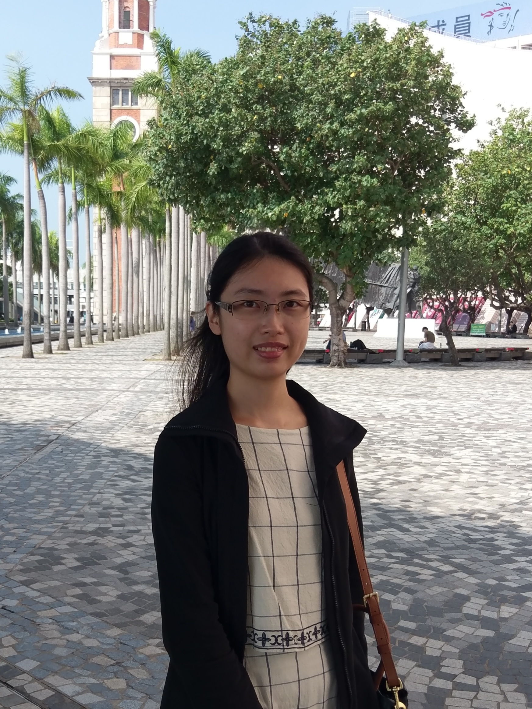
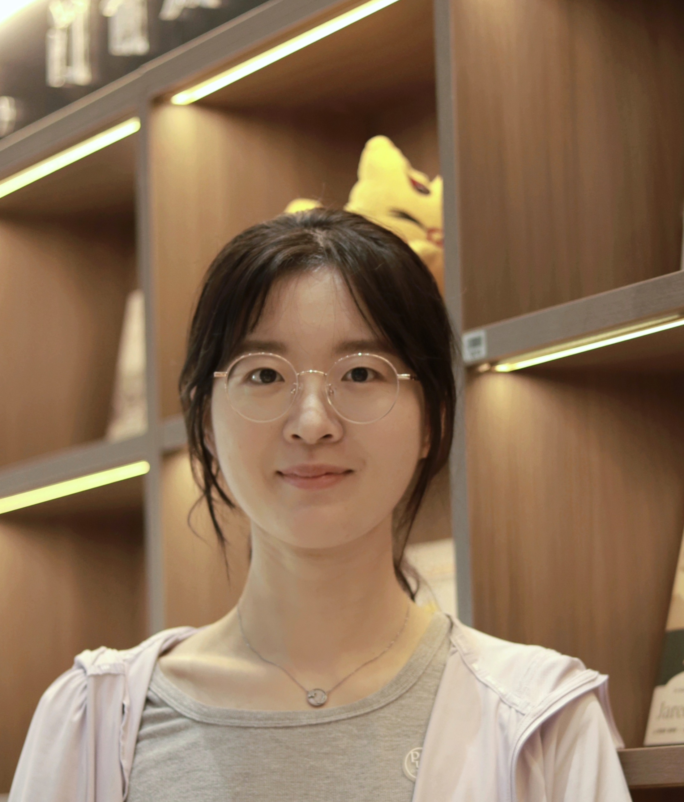

Lab Members
Principal Investigator
Dr. Kanglong Liu 刘康龙
Associate Professor & Principal Investigator
Department of Language Science and Technology
AG518, The Hong Kong Polytechnic University
+852 2766 7451

Bonnie Ho Ling Kwok 郭浩羚
PhD Student
AG518, Core A, The Hong Kong Polytechnic University

Lulu Wang 王璐璐
PhD Student
AG518, Core A, The Hong Kong Polytechnic University